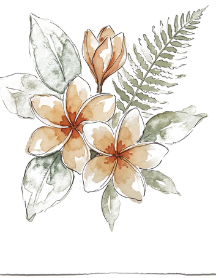

I make the unglamorous parts correct @ Bengaluru
About
I am a backend-leaning TypeScript engineer in Bengaluru, co-founder and CTO of BrainReef until October 2026, founding engineer at Fuleex. I have taken two products from nothing to paying users and then had to keep them correct: an append-only billing ledger where debit and refund are exactly-once by unique constraint, the payment webhook that funds it, and a multi-tenant seam that keeps one college’s data out of another’s.
The work I am best at is the unglamorous kind. The cron that double-sent to real customers when a second instance picked up the same row. The three-query read-modify-write that raced. The in-memory rate-limit counter that stopped meaning anything the day we ran two processes.

Work
01BrainReefCo-Founder & CTO · 2025–Oct 2026
TypeScript monorepo, four production surfaces, 10,000+ users.
- Own the architecture end to end: Next.js and Node services, an 84-table Postgres schema behind Prisma, Cloudflare Workers and Durable Objects for the realtime path, R2 for storage. About 1,300 of my commits, plus pricing, billing and the production infrastructure.
- Designed the billing ledger as append-only signed entries, with debit, refund and admin top-up made exactly-once by a composite unique constraint rather than application checks. Duplicate writes resolve through a P2002 caught outside the transaction, never inside it, where the swallowed error would poison an already-aborted Postgres transaction.
- Built the Razorpay path so it survives the buyer closing the tab: HMAC verified over the raw body, activation idempotent on the order id, an uncaught throw returning 500 so the provider retries, and a deliberate 200 on orders that are not ours so it stops.
- Own the multi-tenant seam. A scoped Prisma client narrows every row to the caller’s org, deliberately unscoped reads are documented in-file with the access they proved, and unauthorized reads answer 404 rather than 403 so the API resists enumeration.
- Led a scale pass that made app instances fungible: rate-limit counters moved from process memory to Redis, PM2 cluster mode with a bounded Prisma pool, PgBouncer in transaction mode with prepared statements off, nginx keepalive upstreams. Public GETs went to a stale-while-revalidate edge cache, with caching skipped on unbounded query keys.
- Removed the quadratic and racy paths behind those numbers: a covering index for the contest leaderboard, an aggregate replacing a full pull of every prior submission blob, and one atomic UPDATE with in-SQL dedup replacing a three-query read-modify-write. Sentry and structured request logging now run across all three apps.
02Fuleex · DexiChatFounding Engineer · 2025–
Multi-tenant messaging and voice platform.
- 300+ commits on a live Node platform paying businesses run customer conversations on across WhatsApp, Instagram, web chat, SMS and phone. 95 tables, 190+ migrations, Stripe and PayPlus on the money path.
- Fixed a duplicate-delivery bug that was reaching real customers: scheduled sends read rows and marked them only after the send returned, so two overlapping cron runs, or two PM2 instances, both claimed the same pending row. Claims are now atomic through a conditional updateMany that skips on a zero count.
- The reminder-call crons now set the sent flag before dialing and release it only if nothing was dialed. On an exception the flag is left set on purpose: after a dial attempt an error cannot tell you whether the customer was reached, and calling someone twice is worse than missing one reminder.
- Ran a full security review of the codebase, wrote up 191 findings and fixed the critical ones: handlers serving whichever tenant the URL named instead of the authenticated one, unauthenticated routes, impersonation logins overwriting the admin session, SSRF and prototype pollution, and two live Google service-account keys in git history.
- Built the phone agent on LiveKit, wiring streaming speech-to-text into an LLM into streaming text-to-speech, with per-connection state released on disconnect so a dropped socket leaks nothing.
03UpworkSecurity Engineer · 2024–2025
Independent client engagements.
- Black-box and white-box penetration testing, OSINT and digital forensics for individual and enterprise clients. Scoped each engagement, ran it, and wrote the report they had to act on. It is where the habit of assuming the hostile input and the partial failure comes from.
- TryHackMe Jr Penetration Tester · ISC2 Certified in Cybersecurity · HTB CPTS in progress.
04NMAM Institute of TechnologyB.E. Information Science · 2022–2026
Karkala, India.
Backend TypeScript / Node, Next.js route handlers, Fastify, Prisma, PostgreSQL, Redis, WebSockets, Zod at every trust boundary · Correctness append-only ledgers, idempotency keys, unique-constraint concurrency control, atomic claim patterns, indexing and query plans, multi-tenant row isolation · Infra Cloudflare Workers, Durable Objects and R2, PM2, nginx, PgBouncer, Docker, GitHub Actions · Payments Razorpay, Stripe, PayPlus
Writing
Plates — Rupin Pass, June 2025
Drag the page to turn · Drag the glass across it
Contact
- Phone
- GitHubgithub.com/divija027
- LinkedInlinkedin.com/in/divijamv
- X@07Divij
- Résumédivija-mv.pdf
Bengaluru · Rupin Pass, June 2025 · Sketchbook by Meng To, MIT